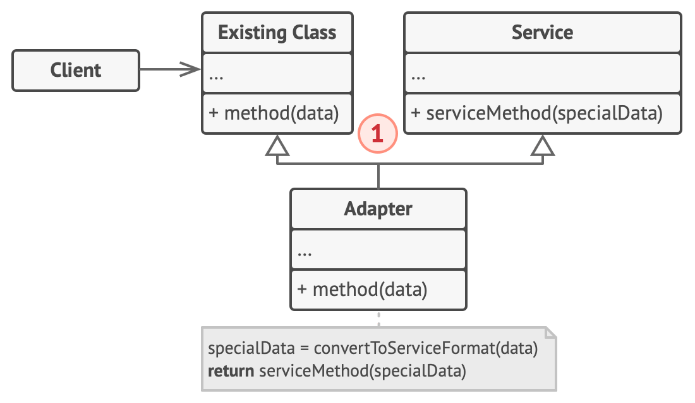

TIC 409 Advanced OOP
Session 2 : Structural patterns
🔌 Adapter
Intent
Converts the interface of a class into another interface clients expect.
Diagram
Example
🔁 Proxy pattern (aka. Surrogate)
Intent
Structural design pattern that lets you provide a substitutre or placeholder for another object. A proxy controls access to the original object, allowing you to perform something either before or after the request gets through to the original object.
Diagram

Example
You are creating you sci-fi game. In your game, you must render multiple Players. Rendering is the process of converting the data structure containing information about a certain object and the environment surrounding it to an image to display. However, rendering a Player is a costly operation.
For the sake of the example, we will assume that rendering doesn't need to be redone if the player hasn't change his position (This is a very simplistic idea and not really representative of what happens in a real game).
Questions
- Start by copying the start code and reading it.
- Start by implementing proxy pattern to protect the player from being re-rendered again if he hasn't changed his position. [code]
- Finally, add `calculateRank` method than returns a number from 1 to 100. Assuming calculating the ranking is an intensive process. You can cache the last score that was returned to the user and only recalculate it if the players changes position. Use the proxy you developed in the last question to cache the score. Display the rank on each loop to view when it changes. [code]
🎄 Decorator pattern (aka. Wrapper)
Intent
Attach additional responsibilities to an object (not a class) dynamically. Decorators provide a flexible alternative to subclassing for extending functionality.
Diagram

Example
You are creating you sci-fi game. In your game, you can own a spaceship. Your spaceship has a basic gun and a basic shield. You can customize your spaceship by attaching addons to it. In our example your will be able to attach Laser gun to improve your attack. You can also equip a Point-defense cannon to improve your defense.
We don't care about how much those addons will impact your attack and defense we will be focusing on ensuring they are activated at the correct time if they are attached to your spaceship. Also a spaceship may have any combination of the above equipments.Questions
- Start by copying the start code and reading it. What do you think about the code structure ?
- Let's assume we wanted to add a new Attack weapon. How hard will it be ? Why ?
- Start by implementing the decorator pattern to improve the code structure. [code]
- How hard would it be to create a `downgrade` method that detaches the last attachment ?
- Is there any other method way to create the same functionality using a different approach ? Will it remain as flexible the builder pattern ?